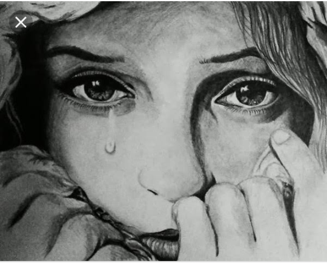

Hello guys....hope u guys r all well and still making this site famous. Well today my post is dedicated to my friends and I mean 'real' and 'reel' friends. I know by now u must be wondering why the quotation marks and that's bcz reel friends r the fake ones just like the fictional movies and series we watch. These kind of friends stand by us for their own personal benefits that can be as small as food...I know that's funny but its the truth of the matter... I bet uv bumped into so many such pple. Real friends stand by us through thick and thin basically through our lows and highs and we replicate that too.
It may be difficult to find such friends I know in the 1st place...buts that's not the only challenge we gotta face. Sometimes u know our heart can be a liar...yes I'm damn serious... the heart gets us so much attached to our besties that we think that they r our true friends but in reality its all a mirage and fake cover. We end up trusting and believing that the friends wev made r the right ones for us but that's not the case...its just that we don't see the vicious intentions they have. I remember my friend narrating me a story about one of her classmates. So the classmate used to take a different technical subject from hers and u know what, about a week before a very important exam the classmate use to mock her why she chose that subject and not the 1 he was taking. This constant 'hate-speech' if I may call it, affected her so much that she ended up failing head down in that subject!! Surprisingly, this had been her fav subject {and her best performed too} in which she had never scored below an A- on the least. When she and the teacher decided to team up to find the reason of her miserable failure, u won't believe what they unraveled. The failed questions were those that she had practiced for over 2wks before the exam and had perfect scores in each of them!! What's more surprising is that she had taught the same very questions to all her classmates who were not sure on how to tackle the questions.
So basically all I'm just tryin to say is that don't trust pple so easily... think before taking any decisions....An honest enemy is better than a false friend.. Sometimes its not the pple that change, its the mask that's falls off. If ur important to ur friends, they will keep a constant check on u and make u feel special. If u don't matter to them, u also don't need to hold on, just let go!!!!No need to carry the extra baggage; even a river lets go and deposits its extra materials it doesn't need, it doesn't carry them to its mouth.

At times one even reaches a point of thinking that he/she is giving too much without receiving the same as they expected to receive. That's a sign that maybe ur not with the right type of friends as they don't care and need u anymore. One of the reasons that can lead to one reaching such a conclusion is because they gave their friends so much respect and importance to become part of their life which the friends weren't worth of- so be very careful of who u hang out with, bcz once ur trust might be broken it may be difficult for u to start trusting some1 else again.
If you find the post interesting read the next post.
Devil Of Stude's